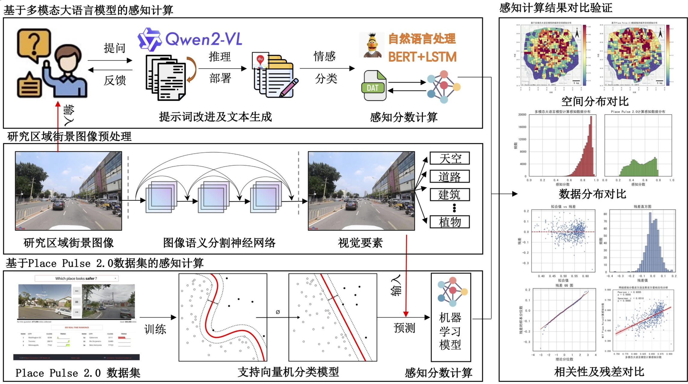

Lei Wang, Jiale Guo, Jie He# (# corresponding author) 王磊， 郭家乐， 何捷# (# 通讯作者)
Under review, Landscape Architecture 审稿中， 风景园林《Landscape Architecture》

In the era defined by "human-centered" development and artificial intelligence, urban spatial perception constitutes a concrete embodiment of fine-grained evaluation of the built environment. Addressing the limitations of traditional spatial-perception evaluation methods in terms of objectivity and efficiency, this paper explores a new paradigm for an urban spatial perception evaluation framework based on a large multimodal model. First, by integrating the triple bottom line theory of sustainable development with the disciplinary characteristics of landscape architecture, we construct a perception evaluation framework encompassing four dimensions: landscape, environment, economy, and society. Second, taking the area within Beijing's Fifth Ring Road as the case site, we collect street-view images, design a systematic prompt engineering pipeline, and employ the Tongyi Qianwen large multimodal model to infer and generate structured textual descriptions. The descriptive text is then quantified into perception scores using a trained BERT+LSTM model. Finally, we conduct an empirical analysis within the Fifth Ring area of Beijing, performing comparative validation between the large multimodal model–based approach and traditional perception evaluation methods grounded in the MIT Place Pulse 2.0 dataset. Evidence, including a Pearson correlation coefficient of r = 0.61 (P < 0.001), demonstrates that the proposed perception evaluation method is flexible and effective. The proposed method provides a standard paradigm and approach for applying large models in the field of landscape architecture, offering intelligent tools and approaches for urban landscape assessment, post-occupancy evaluation of the built environment, and related tasks. 针对传统城市空间感知方法在客观性、精细度和效率上的局限，以及"以人为本"背景下对建成环境品质精细化评价的需求，本文旨在探索一种基于多模态大模型的城市空间感知智能化评价新范式。首先，融合可持续发展三重底线(TBL)理论与风景园林学科特点，构建了包含"景观、环境、经济、社会"四个维度的感知评价框架。其次，以北京市五环内区域为案例地，采集了122,264个点位的街景图像，并通过系统化的提示词工程(Prompt Engineering)，利用通义千问(Qwen2-VL-72B)多模态大模型对30个细分感知指标进行推理，生成结构化的文本描述。随后，通过训练的BERT+LSTM模型将描述文本量化为0-1之间的感知分数。最后，将模型计算结果与基于MIT Place Pulse 2.0数据集的传统机器学习感知评价方法进行对比验证。研究表明：1)基于TBL理论的提示词工程能有效引导多模态大模型从多维度、专业化的视角对城市空间进行精细化感知评价。2)模型生成的感知分数在空间上呈现出"中心城区高，外围区域低"的圈层式分布格局，与城市功能和发展水平高度相关。3)与传统方法相比，本研究提出的方法在感知结果的宏观空间格局上表现出高度一致性(皮尔逊相关系数r=0.61, P<0.001)，验证了其有效性和可靠性。本研究构建了一套从理论框架、提示工程到模型验证的完整技术流程，证实了多模态大模型在城市空间精细化感知领域的巨大潜力。该方法为城市体检、更新设计、建成环境"后评估"等工作提供了新的智能化工具和科学依据。
Multimodal Large Language Model; Urban Spatial Perception; Street View Imagery; Prompt Engineering; Triple Bottom Line; Beijing 城市空间感知；多模态大模型；街景图像；提示词工程；可持续发展三重底线(TBL)；北京